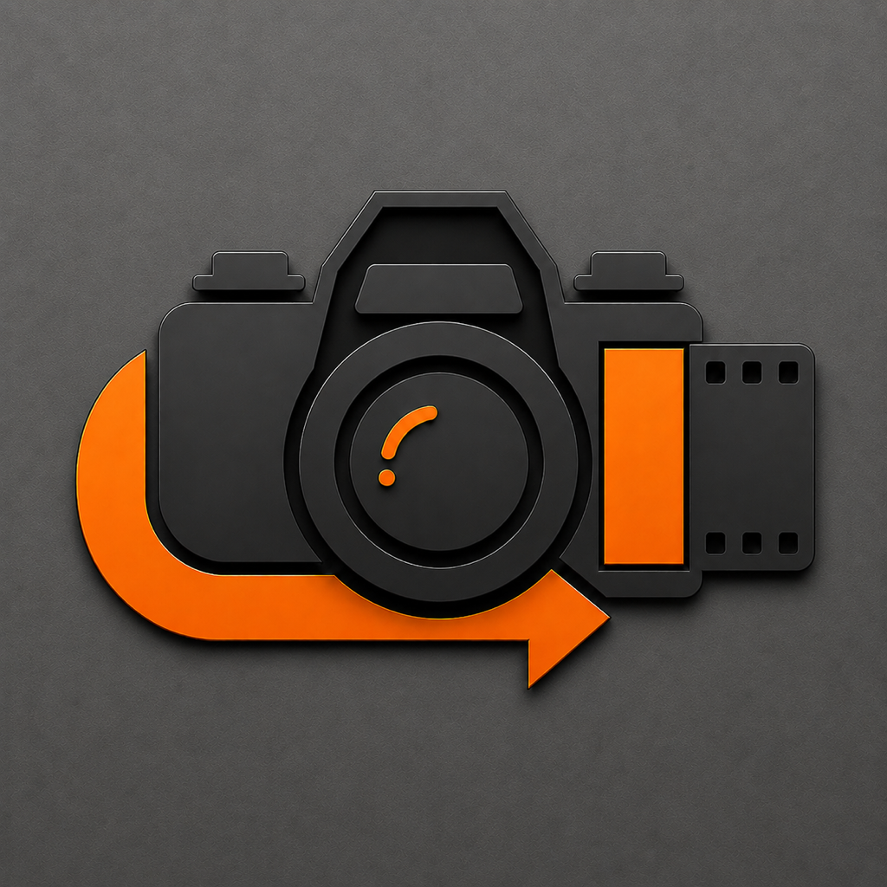

01
Choose your photos
Import from your photo library or take a photo in the app. You stay in control of which images you work with.

35MM BatchFilm character, in batches
35MM Batch brings some of the warmth and character of Russ Kay’s favourite 35mm film stocks to the photos you already have.
01
Import from your photo library or take a photo in the app. You stay in control of which images you work with.
02
Choose from the built-in looks and adjust the strength and grain to suit the set you are working on.
03
Develop up to 150 photos in a batch, then save copies, edit originals when permitted, or share the finished images.
Made with an analogue heart
35MM Batch was made by Russ, who loves shooting 35mm film and wanted a quicker way to bring that feeling to digital photos in bulk. The looks are tuned using his own photographs and favourite film stocks.